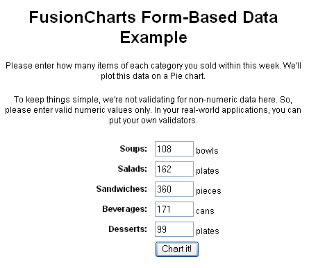
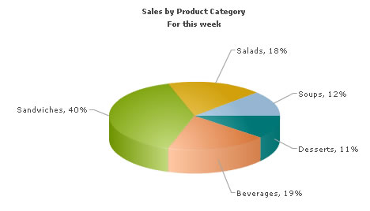

| Charting Data from Forms |
In this section, we will show you how to use FusionCharts ASP class functions to plot data collected in forms. We will build a simple restaurant sales example, where the user will enter the items sold by a restaurant in a given week. This data will be submitted in a form to the server. We will acquire this data and plot it on a chart. For the sake of simplicity, we will process anything on this data. However, your real life applications might require data validation or processing before presenting it on the chart. Before you go further with this page, we recommend you to please see the previous section Basic Examples as we start off from concepts explained in that page. |
| The code examples contained in this page are present in Download Package > Code > ASPClass > FormBased folder. |
| Building the Form |
The form is contained in Default.asp and looks as under: It's a very simple form which submits to Chart.asp. We are not going into the code of the form, you can directly open the source from download and see it. |
| Requesting the data and Creating the Chart |
The work of requesting the data from submitted form and creating the chart is done in Chart.asp, present in the same folder. It contains the following code: |
<%@LANGUAGE="VBSCRIPT"%> <% option explicit %> <% 'We have included ../Includes/FusionCharts_Gen.asp, which contains FusionCharts ASP Class 'to help us easily embed the charts. %> <!--#include file="../Includes/FusionCharts_Gen.asp"--> <HTML> <HEAD> <TITLE>FusionCharts XT - Form Based Data Charting Example</TITLE> <% 'You need to include the following JS file, if you intend to embed the chart using JavaScript. 'Embedding using JavaScripts avoids the "Click to Activate..." issue in Internet Explorer 'When you make your own charts, make sure that the path to this JS file is correct. Else, you will get JavaScript errors. %> <SCRIPT LANGUAGE="Javascript" SRC="../../FusionCharts/FusionCharts.js"></SCRIPT> </HEAD> <BODY> <h4>Restaurant Sales Chart below</h4> <% 'We first request the data from the form (Default.asp) dim intSoups, intSalads, intSandwiches, intBeverages, intDesserts intSoups = Request("Soups") intSalads = Request("Salads") intSandwiches = Request("Sandwiches") intBeverages = Request("Beverages") intDesserts = Request("Desserts") 'In this example, we are directly showing this data back on chart. 'In your apps, you can do the required processing and then show the 'relevant data only. 'Now that we have the data in variables, we need to convert this into chart data using 'FusionCharts ASP Class dim FC ' Create FusionCharts ASP class object set FC = new FusionCharts ' Set chart type to pie 3D Call FC.setChartType("Pie3D") ' Set chart size Call FC.setSize("600","300") ' Set Relative Path of SWF file. Call FC.setSWFPath("../../FusionCharts/") dim strParam ' Define chart attributes strParam="caption=Sales by Product Category;subCaption=For this week;showPercentValues=1; showPercentageInLabel=1;pieSliceDepth=25;showBorder=1;showLabels=1" ' Set chart attributes Call FC.setChartParams(strParam) ' Add chart data from form Field Call FC.addChartData(intSoups,"Label=Soups","") Call FC.addChartData(intSalads,"Label=Salads","") Call FC.addChartData(intSandwiches,"Label=Sandwiches","") Call FC.addChartData(intBeverages,"Label=Beverages","") Call FC.addChartData(intDesserts,"Label=Desserts","") 'Create the chart Call FC.renderChart(false) %> </BODY> </HTML> |
As you can see in the above code, we are doing the following: |
|
Please go through the FusionCharts ASP Class API Reference section to know more about the functions used in the above code. |
| When you finally run the code, you will see a chart as under:
 |